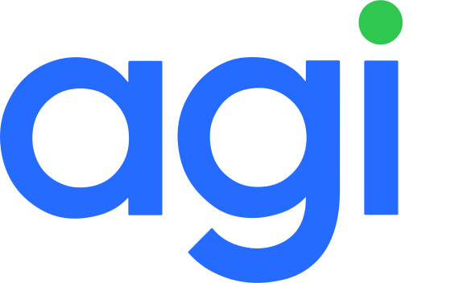

Insuficiência 6 dias antes do salário
- Luz (R$ 120 em 12/nov) + Aluguel (R$ 1.200 em 14/nov)
- Saldo cai para −R$ 340,00 no dia 14/nov
- Salário de R$ 3.200 só entra em 20/nov

Case 2026Antecipar o aperto. Dar tempo para agir.
Uma camada inteligente de previsibilidade financeira que avisa quando o saldo disponível pode não cobrir os compromissos até o próximo salário — combinando motor determinístico e simulação em 1 toque.
Muitas pessoas só descobrem que o saldo não será suficiente quando uma compra é recusada, uma conta deixa de ser paga ou a conta entra no cheque especial. O saldo de hoje esconde os compromissos que vencem antes do próximo salário.
O extrato tradicional olha para trás. Mesmo com saldo positivo hoje, boletos registrados (DDA), débitos automáticos e contas fixas podem gerar insuficiência antes da próxima entrada.
Projetar o saldo dia a dia até o próximo recebimento, apontando quando pode faltar, qual conta pesa mais e permitindo simular decisões sem alterar pagamentos reais.
Se olharmos apenas para o saldo após o salário (+R$ 1.300), parece estar tudo bem. Mas o aluguel vence no Dia 7 e o salário só entra no Dia 9 — gerando um aperto real de −R$ 200 no meio do caminho.
Explicação clara: “Possível falta de R$ 200 no dia 7, após o aluguel, 2 dias antes do salário.”
Ação imediata: informar que já pagou por outro banco ou simular outra data com aviso de encargos.
Em vez de prometer prever toda a vida financeira com modelos opacos, o MVP foca em regras determinísticas, separando compromissos confirmados de estimativas e oferecendo simulação imediata.
Organiza entradas e saídas em ordem cronológica. Mesmo que o salário cubra tudo no fim do mês, alerta se uma conta vence antes.
Contas confirmadas (boletos DDA, débito automático, parcelas fixas) têm peso diferente de gastos estimados ou entradas incertas.
Todo alerta permite agir: marcar conta como paga por outro banco, ajustar valor estimado ou simular nova data com aviso de encargos.
Disparado somente quando compromissos confirmados indicam saldo negativo antes do próximo recebimento.
Quando as contas confirmadas cabem no saldo, mas gastos estimados ou o horário no mesmo dia trazem risco.
Sem insuficiência identificada (sem prometer que não haverá gastos extras) ou Dados insuficientes quando falta histórico.
Carlos Eduardo · Cenário 01 da Plataforma
Saldo livre: R$ 980,00 (Cheque especial de R$ 1.000 isolado) · Salário em 20/nov
Arquitetura pensada para leitura rápida no celular e análise comparativa no desktop.
Diagnóstico imediato do estado financeiro, saldo disponível sem limite de crédito e menor saldo projetado.
PulseHeroCard.tsxGráfico SVG interativo com linha zero, zona de insuficiência e comparação entre saldo confirmado e projetado.
LiquidityStepChart.tsxLinha do tempo agrupada por data com deduplicação automática (DDA × manual) e aviso de horário intradiário.
CommitmentsLedger.tsxAtalhos de 1 toque (“Pago em outro banco”, “Simular após salário”) e criação de gastos hipotéticos.
SimulatorSheet.tsxIA embarcada (gemini-2.5-flash) sobre Context Pack fechado e Function Calling para simular em linguagem natural.
GeminiCopilotCard.tsxCálculo puro em centavos inteiros (Cents) validado por 22 testes automatizados no Vitest.
src/domain/engine.tsUsei a IA como parceira de estruturação, crítica e engenharia, mantendo sob minha decisão a escolha do problema, o recorte de produto e os critérios de responsabilidade financeira.
• O problema: perceber a falta de saldo tarde demais.
• O recorte: olhar apenas até o próximo recebimento.
• A regra de produto: todo alerta precisa dizer quando, por quê e permitir agir/simular.
• A direção técnica: usar regras determinísticas em vez de IA caixa-preta no MVP.
• Crítica de casos extremos: levantar falhas como conta paga em outro banco, duplicidade DDA × manual e risco intradiário.
• Arquitetura e código: implementar o motor em centavos inteiros, 22 testes no Vitest e revisão com subagentes (Arquiteto, QA, UI e UX Mobile).
Não pedi a solução pronta de uma vez. Quando pedimos tudo junto, a IA costuma entregar algo amplo e artificial. Conduzi o processo em cinco etapas progressivas:
Expliquei a ideia inicial e pedi para a IA listar onde a solução podia falhar na vida real antes de desenhar qualquer tela.
Cortei excessos para caber em um MVP realista e refinei os textos em português direto, sem jargão técnico ou tom alarmista.
Quando a primeira interface ficou com “cara de IA” (tema escuro, verde neon, excesso de botões), acionei agentes críticos para redesenhar com sobriedade.
1 · Prompt de Crítica de Regras Financeiras
“Quero propor uma funcionalidade chamada Fôlego do Mês, que mostra se o saldo atual mais entradas previstas cobrem os compromissos até o próximo salário. Não quero elogios. Liste os principais riscos de erro, falsos alertas, problemas de experiência do usuário e casos em que essa lógica pode falhar.”
2 · Prompt de Simplificação e UX Writing
“Reescreva a proposta do Fôlego do Mês de forma simples, direta e profissional, sem jargões técnicos, sem siglas desnecessárias e sem linguagem exagerada. Qualquer pessoa precisa entender o problema, o exemplo prático e o que entra no MVP em poucos minutos.”
3 · Prompt de Redesenho Visual Anti-IA (Codex Agents)
“Está com muita cara de IA. Chame codex agents para analisar a UI: remova estética de terminal escuro, excesso de badges em caixa alta e múltiplos botões por linha. Transforme em um produto financeiro luminoso, limpo e humano inspirado na leveza do universo Agibank.”
Em produto financeiro, um erro de cálculo ou uma frase mal escrita pode assustar o cliente ou induzi-lo a atrasar uma conta importante.
• Falso positivo: conta paga em outro banco pode ser marcada em 1 toque.
• Falso negativo: nunca dizemos “Você não ficará negativo”, mas sim “Com base nos compromissos identificados, não encontramos falta prevista”.
• Simulação × Realidade: aviso explícito de que simular não cancela nem agenda boletos.
• Encargos: alerta automático ao simular pagamento após o vencimento.
• Zero dados reais: todos os 7 cenários utilizam personas e transações 100% sintéticas.
• Revisão linha a linha: nenhum trecho gerado por IA entrou no projeto sem que eu compreendesse a regra matemática e soubesse explicar cada decisão.
• Transparência sobre não saber: quando faltam dados (Cenário 07), o motor declara Sem Conclusão em vez de chutar.
Aluguel (R$ 1.200) vence em 14/nov antes do salário (20/nov). Gera Alerta Preventivo de −R$ 340.
Contas confirmadas cabem no saldo, mas estimativa de mercado/cartão gera Aviso Condicional (−R$ 260).
Saldo de R$ 2.150 cobre todas as contas confirmadas e estimadas mantendo folga mínima de +R$ 610.
Boleto DDA de condomínio (R$ 680) e lembrete manual são identificados; motor desconta uma única vez.
Comissão sem data garantida é isolada na curva otimista, evitando falsa segurança antes das contas fixas.
Salário e boleto vencem em 15/nov. O saldo final é positivo, mas o motor alerta o risco de horário pela manhã.
Conta recém-conectada sem histórico. O sistema declara Sem Conclusão em vez de inventar projeção.
Clique em qualquer conta na plataforma para simular pagamento por outro banco ou mudança de data.
Antecipar o aperto. Dar tempo para agir. Escaneie o QR Code ou clique ao lado para explorar a plataforma ao vivo.